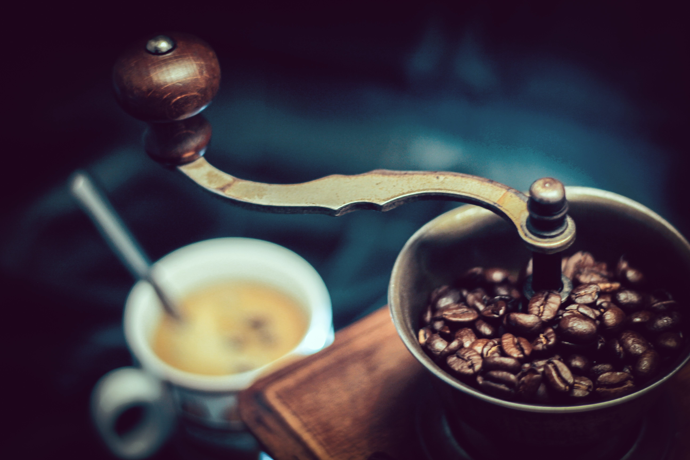

El Encanto del Café
¡Bienvenidos a Café con juancho, el lugar donde la pasión por el café se encuentra con el encanto único de juancho, nuestro amigable cocodrilo barista! En esta sección, exploraremos las maravillas del café y cómo juancho le da su toque especial a cada taza.

Descubre el Mundo del Café
Sumérgete en el fascinante universo de los granos de café, desde sus orígenes en tierras lejanas hasta el proceso de tostado que los convierte en esa deliciosa bebida que tanto amamos. Acompañaremos a juancho en su viaje personal por la cultura del café y descubriremos cómo ha perfeccionado su arte a lo largo del tiempo.
El Toque Mágico de juancho
¿Cómo un cocodrilo se convierte en un experto barista? Acompáñanos mientras juancho comparte sus secretos y técnicas para preparar el café perfecto. Desde la elección de los granos hasta la temperatura ideal del agua, descubriremos cómo cada detalle cuenta para lograr una experiencia de café única y memorable.
Rincones Acogedores
En esta sección, exploraremos los rincones acogedores de Café con juncho, donde la atmósfera cálida se mezcla con el sabor exquisito del café. ¡Prepárate para sumergirte en un mundo lleno de comodidad y camaradería!

El Ambiente Único de Café con juancho
Desde la decoración con temática de cocodrilo hasta la elección de la música de fondo, descubre cómo juancho ha creado un espacio acogedor que te invita a relajarte y disfrutar de tu café. Con cómodos sofás y rincones íntimos, cada visita a Café con juancho es una experiencia única.
Eventos Especiales y Comunidad
Café con juancho no es solo un lugar para tomar café; también es un punto de encuentro para la comunidad. Explora los eventos especiales que juancho organiza, desde noches de poesía hasta degustaciones de café. Conoce a otros amantes del café y comparte momentos inolvidables en este rincón acogedor.
Recetas Únicas
¡Prepárate para experimentar con nuevas y emocionantes recetas de café que solo juancho, el cocodrilo barista, podría crear! Desde combinaciones inusuales hasta técnicas innovadoras, esta sección te llevará a un viaje culinario lleno de sorpresas.

Las Creaciones Únicas de juancho
Descubre las creaciones más populares de juancho, desde el "Café Salvaje" hasta el "Latte del Pantano". Cada bebida tiene su historia y un toque especial que solo Juancho puede ofrecer. Aprende a recrear estas delicias en casa y sorprende a tus amigos con tus habilidades de barista.
Consejos y Trucos de juancho
¿Quieres mejorar tus habilidades como barista en casa? juancho comparte sus mejores consejos y trucos para hacer que tus tazas de café sean tan impresionantes como las suyas. Desde la elección de la leche hasta la presentación final, aprende a llevar tus habilidades de preparación de café al siguiente nivel.